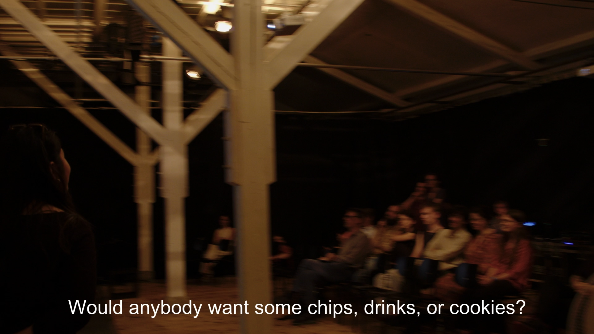
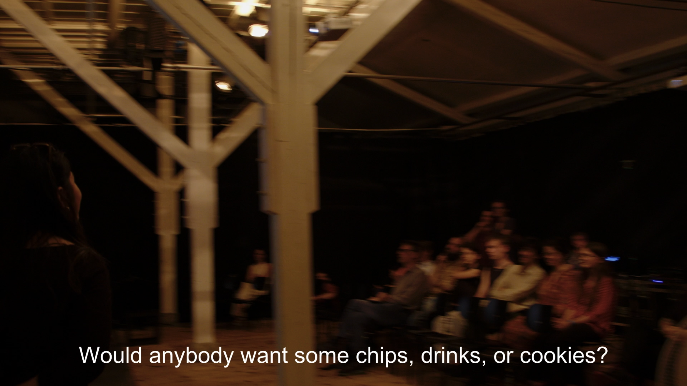

ex-chill
collides a model of social hierarchy with the concepts of relaxation and commerce in music.
 

in
Two of the seating classes see the music live; the other two only see a live stream. The top two classes receive a complimentary snack or drink, the other are sold cheap junk food. The top three classes must pay for entry. The last class must not, but receives no seating.
Here, access to presence is mediated by actual economic exchange. Those that pay the most can even lay down and receive an ASMR-like ear massage.
ex-chill
the audience is divided into seating classes, each with its own particular quality.
Two of the seating classes see the music live; the other two only see a live stream. The top two classes receive a complimentary snack or drink, the other are sold cheap junk food. The top three classes must pay for entry. The last class must not, but receives no seating.
Here, access to presence is mediated by actual economic exchange. Those that pay the most can even lay down and receive an ASMR-like ear massage.
The music mirrors the social hierarchy by colliding the engrossing listening experience of wind-based noise music with jumbled samples of commercial music. The external situation again and again interferes with the inner-musical situation.
To support the format, the arts organization AGGRONYMBUS was founded. Representatives of AGGRONYMBUS sold tickets and merchandise before the concert.
binaural recording
please listen with headphones!
stereo recording